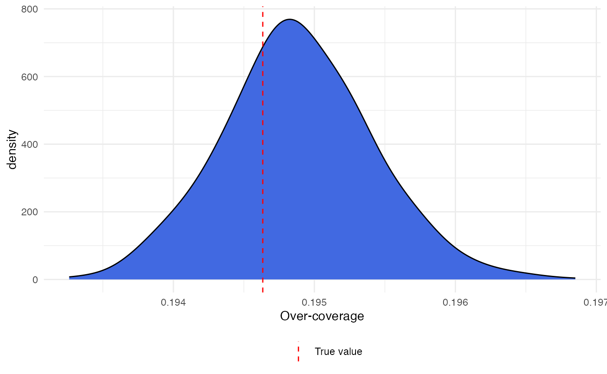

How to study the effect of removing one list in the estimation of over-coverage
how-to-study-removal-lists.RmdIn the electronic supplementary material of our paper, there is a simulation study where we discussed the different effects when removing registers in the estimation of our model. The link and the info for the paper follows:
- Mussino, E., Santos, B., Monti, A. et al. Multiple systems estimation for studying over-coverage and its heterogeneity in population registers. Quality & Quantity (2023). https://doi.org/10.1007/s11135-023-01757-x
Here we discuss the different steps of the simulation study and show how to reproduce the experiment.
Initial Setup
For this simultation, we need to generate new population according to the same rules for every replication of the study. In the same way, we create 3 lists, \(X\), \(Y\) and \(Z\), where the probability of being observed always follows the same function. For this experiment, we create 3 binary variables that are used separately in the probability function in each one of the lists.
The initial step is to generate the population, where we create one continuous and one categorical variable, although they will not be used for the study. The function just needs to create at least one variable of these types.
library(overcoverage)
set.seed(42)
main_list <- create_population(size = 1e6,
n_bin_var = 3,
n_cont_var = 1,
n_cat_var = 1,
c(0.5))We assume that individuals will leave the country according to a
logistic model and using bin1 variable as the covariate to
write this probability. Using the create_presences function
from our package and considering only 2 years of observation, we have
the following:
true_presences <- create_presences(main_list,
formula_phi = ~ bin1,
coef_values = c(2, -1),
varying_arrival = TRUE,
years = 2)If \(B_1\) represents
bin1 and \(\phi\) is the
probability of staying in the country (usually known as
surviving, in the capture-recapture literature) each year, we
considering the following logistic regression to calculate those
probabilities
\[\log \begin{pmatrix}\frac{\phi}{1 - \phi} \end{pmatrix} = 2 - B_1,\]
With this equation, we are creating two probabilities of staying in the country, when \(B_1 = 0\) or when \(B_1 = 1\), which are calculated respectively as
\[\frac{\exp(2)}{1 + \exp(2)} = 0.881 \quad \mbox{ and } \quad \frac{\exp(2 - 1)}{1 + \exp(2 - 2)} = 0.731.\]
For each simulation step we also create 3 lists, \(X\), \(Y\)
and \(Z\), using the function
create_list_presences.
X <- create_list_presences(main_list, presences = true_presences,
formula_prob = ~ bin1,
coef_values = c(1.5, -0.5))
Y <- create_list_presences(main_list, presences = true_presences,
formula_prob = ~ bin2,
coef_values = c(-0.5, -0.5))
Z <- create_list_presences(main_list, presences = true_presences,
formula_prob = ~ bin3,
coef_values = c(-1.5, -0.5))The argument formula_prob controls which variables are
used to calculate the probability of being observed in each list. As we
have said previously, we are considering the 3 different binary
variables (bin1, bin2 and bin3)
separately for each list. The values in the argument
coef_values are used in the logistic regression to generate
the observation in each list. For instance, for list \(X\) we are calculating the following
\[\log \begin{pmatrix}\frac{P(X = 1|B_1)}{1 - P(X = 1|B = 1)} \end{pmatrix} = 1.5 - 0.5 \cdot B_1,\]
which gives us estimated probabilities of 0.818 and 0.731 for \(B_1 = 0\) and \(B_1 = 1\), respectively.
Now we just need to recreate the scenarios where we use just part of tesse lists to estimate the over-coverage. For this particular toy example, the true value of over-coverage in the second year is given by
Removing lists and estimating over-coverage
At this step, we need to run the model to estimate the over-coverage and repeat the same procedure removing one of the lists, for instance. Considering all lists, we could run the following to estimate the over-coverage
library(dplyr)
all_data <-
cbind(bin1 = main_list$bin1,
bin2 = main_list$bin2,
bin3 = main_list$bin3,
X = X[, 2],
Y = Y[, 2],
Z = Z[, 2]) %>%
as.data.frame()
freq_data <- all_data %>%
group_by(bin1, bin2, bin3, X, Y, Z) %>%
summarise(count = n())
freq_data <- freq_data %>%
mutate(cens = ifelse(X == 0 &
Y == 0 &
Z == 0, TRUE, FALSE))
cens_ind <- which(freq_data$cens)
model <- overcoverage::oc_model(
model_formula = count ~ bin1 * X + bin2 * Y + bin3 * Z,
freq_table = freq_data, censored = cens_ind)Given this model, we can estimate our over-coverage as
mean(model$oc_estimates)
#> [1] 0.1948825And a credible interval with 95% of probability can be calculated as
A density plot of our estimates with the true value can be obtained with
library(ggplot2)
ggplot() +
theme_minimal() +
geom_density(aes(model$oc_estimates), adjust = 1.5,
fill = "royalblue") +
geom_vline(aes(xintercept = true_oc, color = "True value"), linetype = 2) +
labs(x = "Over-coverage") +
scale_color_manual(name = "", values = "red") +
theme(legend.position = "bottom")
To estimate the model without list \(X\) for instance, we would need to run the following code. We need to change the censored observations index before running the code
# removing X
freq_data_x <- all_data %>%
group_by(bin1, bin2, bin3, Y, Z) %>%
summarise(count = n())
freq_data_x <- freq_data_x %>%
mutate(cens = ifelse(Y == 0 &
Z == 0, TRUE, FALSE))
cens_ind <- which(freq_data_x$cens)
model_x <- overcoverage::oc_model(
model_formula =
count ~ bin1 + bin2 * Y + bin3 * Z,
freq_table = freq_data_x, censored = cens_ind,
nsample = 60000,
n.burnin = 50000,
thin = 10)Now, our mean posterior estimates and 95% credible intervals will be given by
mean(model_x$oc_estimates)
#> [1] 0.1962906Simulation setup
For the simulation, we will consider the same data set for every replication of the study and we estimate over-coverage with all lists and removing one list at a time. In order to make
sim_mse <- function(seed){
set.seed(seed)
n_years <- 2
## Creating population
main_list <- create_population(size = 1e6,
n_bin_var = 3,
n_cont_var = 1,
n_cat_var = 1,
c(0.5))
true_presences <- create_presences(main_list,
formula_phi = ~ bin1,
coef_values = c(2, -1),
varying_arrival = TRUE,
years = n_years)
X <- create_list_presences(main_list,
presences = true_presences,
~ bin1,
c(1.5, -0.5))
Y <- create_list_presences(main_list,
presences = true_presences,
~ bin2,
c(-0.5, -0.5))
Z <- create_list_presences(main_list,
presences = true_presences,
~ bin3,
c(-1.5, -0.5))
all_data <-
cbind(bin1 = main_list$bin1,
bin2 = main_list$bin2,
bin3 = main_list$bin3,
X = X[, 2],
Y = Y[, 2],
Z = Z[, 2]) %>%
as.data.frame()
sim_cases <- list()
freq_data <- new_data %>%
group_by(bin1, bin2, bin3, X, Y, Z) %>%
summarise(count = n())
freq_data <- freq_data %>%
mutate(cens = ifelse(X == 0 &
Y == 0 &
Z == 0, TRUE, FALSE))
cens_ind <- which(freq_data$cens)
sim_cases[[1]] <- oc_model(
formula = count ~ bin1 * X + bin2 * Y + bin3 * Z,
data = freq_data,
cens = cens_ind,
nsample = 60000,
n.burnin = 5000,
thin = 10)
freq_data_x <- new_data %>%
group_by(bin1, bin2, bin3, Y, Z) %>%
summarise(count = n())
freq_data_x <- freq_data_x %>%
mutate(cens = ifelse(Y == 0 &
Z == 0, TRUE, FALSE))
cens_ind_x <- which(freq_data_x$cens)
sim_cases[[2]] <- oc_model(
formula = count ~ bin1 + bin2 * Y + bin3 * Z,
data = freq_data_x,
cens = cens_ind_x,
nsample = 60000,
n.burnin = 5000,
thin = 10)
freq_data_y <- new_data %>%
group_by(bin1, bin2, bin3,
X, Z) %>%
summarise(count = n())
freq_data_y <- freq_data_y %>%
mutate(cens = ifelse(X == 0 &
Z == 0, TRUE, FALSE))
cens_ind_y <- which(freq_data_y$cens)
sim_cases[[3]] <- oc_model(
formula = count ~ bin1 * X + bin2 + bin3 * Z,
data = freq_data_y,
cens = cens_ind_y,
nsample = 60000,
n.burnin = 5000,
thin = 10)
freq_data_z <- new_data %>%
group_by(bin1, bin2, bin3, X, Y) %>%
summarise(count = n())
freq_data_z <- freq_data_z %>%
mutate(cens = ifelse(X == 0 &
Y == 0, TRUE, FALSE))
cens_ind_z <- which(freq_data_z$cens)
sim_model <- bict2(
formula = count ~ bin1*l1 + bin2*Y + bin3,
data = freq_data,
cens = cens_ind,
nsample = 60000,
n.burnin = 5000,
thin = 10)
sim_model_tot <-
total_pop(sim_model,
n.burnin = 50000,
thin = 10)
list(total = sim_model_tot$meanTOT,
lower = sim_model_tot$int[, 1],
upper = sim_model_tot$int[, 2],
model = sim_model_tot,
freq_data = freq_data,
rel_total = sim_model_tot$TOT/sum(true_presences[, 2]))
}